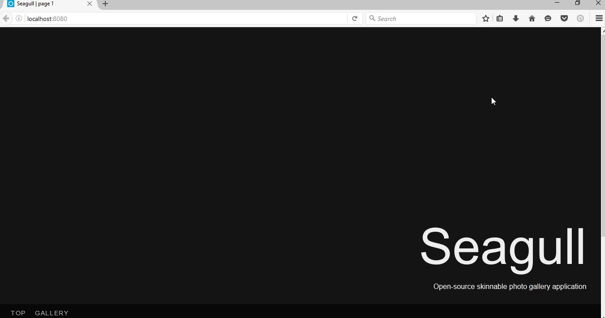
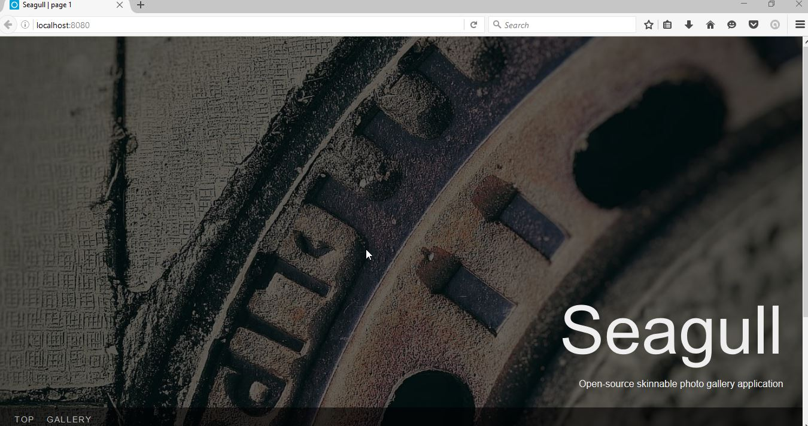
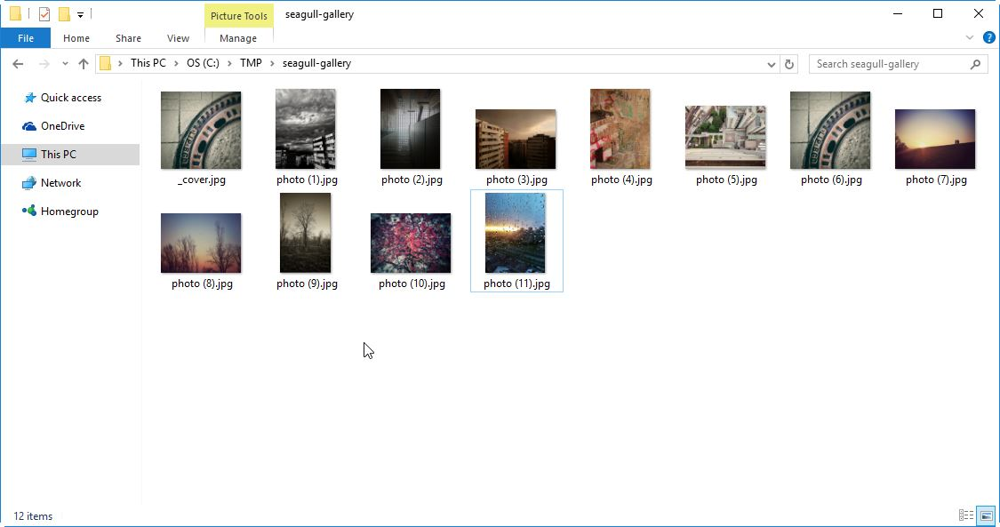
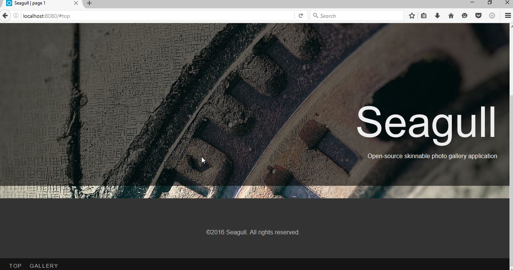
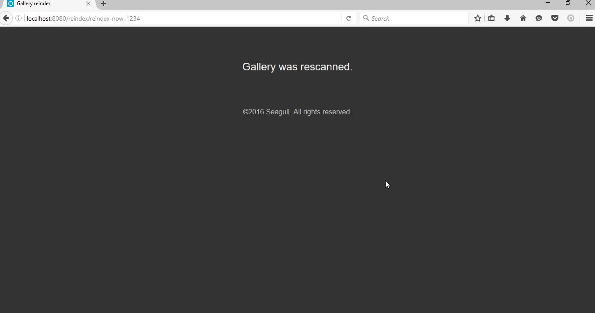
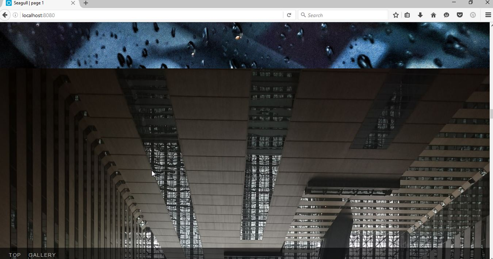
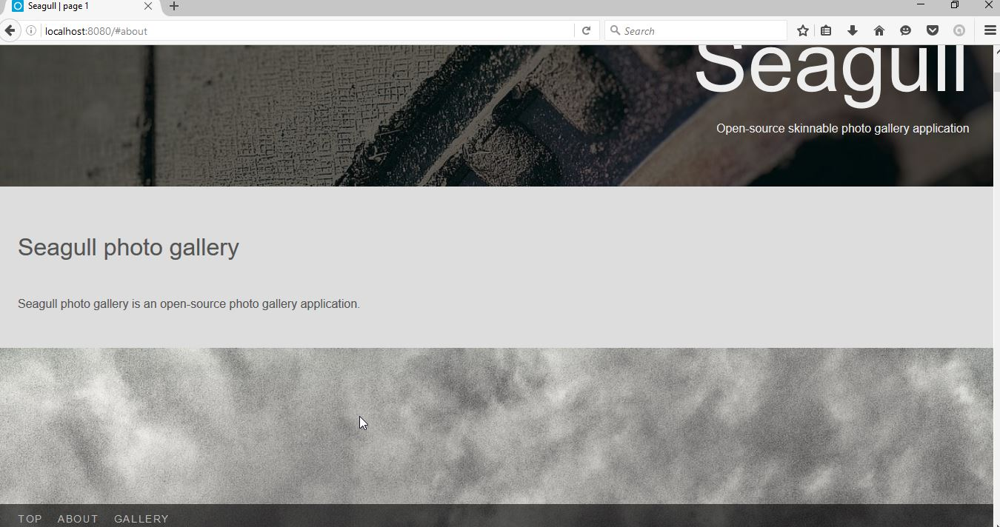
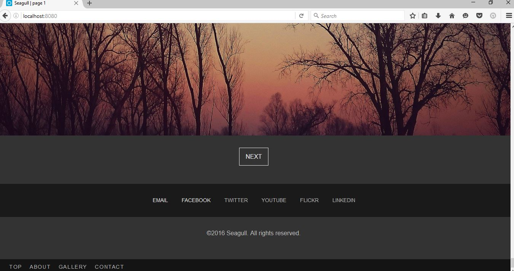

First steps¶
In this section, we’ll take Seagull for a quick step, and do some fairly basic ‘customization’, simply by manipulating the gallery folder.
Ignition!¶
Let’s quickly start up Seagull and see what that does. In your console, type:
> seagull
Starting Seagull
Registering SIGINT handler
Registering SIGTERM handler
Preparing application to run
Added JS bundle: app.js
Added CSS bundle: app.css
Quitting, no gallery directory '/tmp/seagull-gallery'
So that was a bit underwhelming. It’s missing a gallery folder at its
default location, which is /tmp/seagull-gallery (or
C:\tmp\seagull-gallery on Windows). Thankfully, this is easy to fix. Let’s
create the folder where it wants it and try again:
> seagull
Starting Seagull
Registering SIGINT handler
Registering SIGTERM handler
Preparing application to run
Added JS bundle: app.js
Added CSS bundle: app.css
Setting up index for /tmp/seagull-gallery
Sorting items
Added 0 items to the index
Route gallery:main mapped to /
Route gallery:image mapped to /gallery/<path:path>
Route gallery:reindex mapped to /reindex/<token>
Route app:static mapped to /static/<path:path>
Server started on http://0.0.0.0:8080/
Server started on http://0.0.0.0:8080/
Now that’s more like it. It does say ‘Server started’ twice, but it’s only starting once. It’s a bug. To access Seagull, let’s open our favorite browser (Firefox, of course) and browse to localhost:8080.
Adding the cover¶
The screen looks deliciously dark, but I’m pretty sure not everyone enjoys
dark. Let’s add a cover image. Pick any JPEG image that’s fairly large (say,
1600px by 1200px) and put it in the gallery folder. Rename the image to
_cover.jpg.
Note
Only JPEG images are supported for covers at this time, and it will likely remain that way for foreeseable future. This can be fixed relatively easily through skinning, though.
Let’s reload the page.
It already looks presentable. You will notice that the two bottom links don’t do much. This is because there are no photos in the gallery.
Adding the photos¶
To add the photos to the gallery, we simply dump a bunch of JPEG, PNG, or GIF images into the gallery folder.
Let’s reload the page.
But wait. There are still no photos. This is because, unlike the cover page, the photos in the actual gallery need to be reindexed before they will show up. It would be too CPU-intensive if we did this every time we load the page, so we do it only as needed. To trigger the indexing, we use a magic URL: localhost:8080/reindex/reindex-now-1234 (the part that says ‘reindex-now-1234’ is configurable, and we’ll get to that in the next section). Once we go to that page, we will see a message about gallery being rescanned.
After approximately 5 seconds, we are back in the main page. If we now scroll down or use the ‘gallery’ link, we will see our photos.
The photos are ordered in lexical order (or in plain English: alphabetically). All you need to do in order to change the image order is to change the file names.
Adding the ‘About’ section¶
Seagull supports adding an ‘About’ section that appears right below the cover image on the start page. The about section is written in Markdown, so it’s helpful to know its syntax. Let’s open up an editor and add some text for a short about section:
## Seagull photo gallery
Seagull photo gallery is an open-source photo gallery application.
We’ll save this file in our gallery folder and name it _about.mkd.
As with the photos, we need to reindex the gallery. Once the gallery is reindexed, and we reload the page, we see that there is a new link in the menu, and that our text has been rendered as a section below the cover page just like promised.
Adding the contact links¶
There is one more thing that we can add using the gallery folder and that’s contact links section. It would be most straightforward to explain how these work by showing an example:
email: hayavuk@gmail.com
facebook: hayavuk
twitter: foxbunny
flickr: foxbunny
linkedin: brankovukelic
youtube: UC7OFFqXeuvvlRIXGkK4jMsQ
The above example contains all supported contact links. The order does not matter, but the names on the left have to be exactly as they appear there and must be all lower-case. On the right, you always type in the last portion of the profile address (the bit after the last slash: /).
Now, let’s save this file in our gallery folder as _contact.info.
After reindexing and reloading the page, the menu contains the contact link, and contact links section appears at the bottom of the page.
